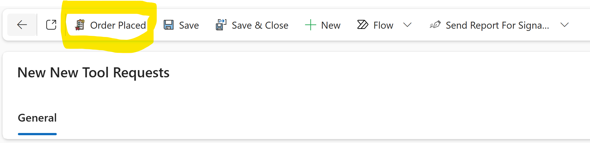
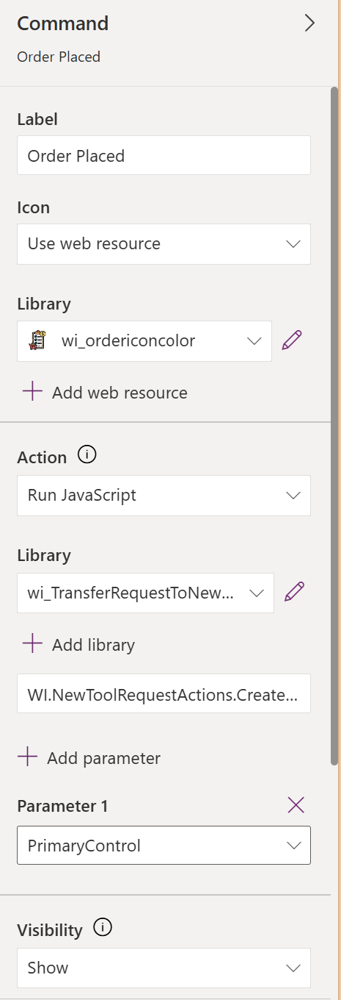
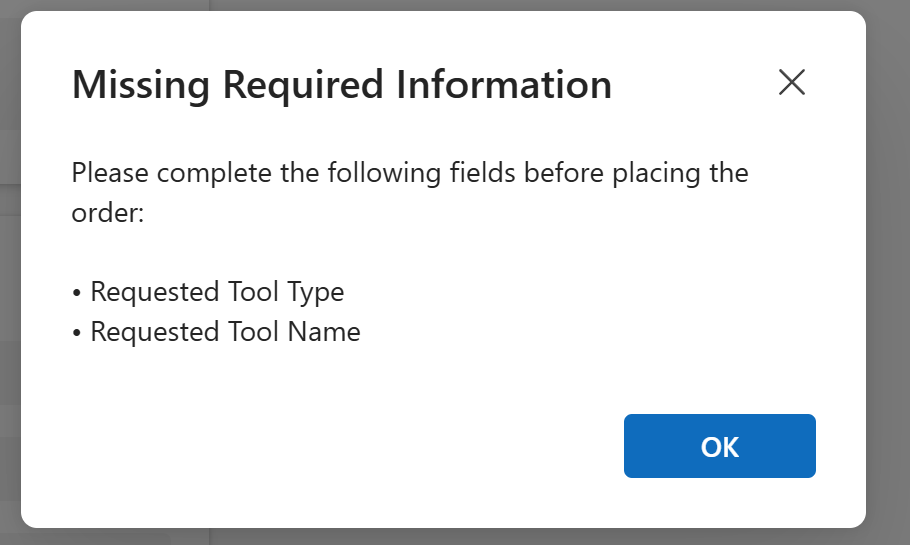
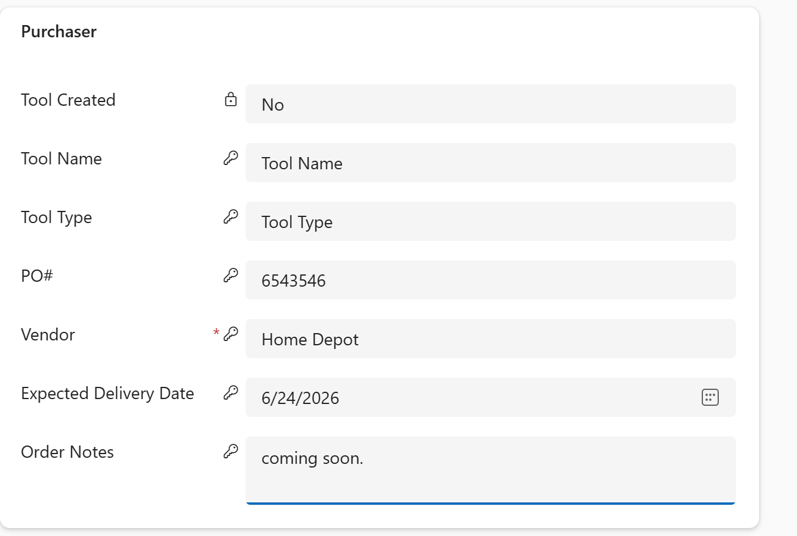
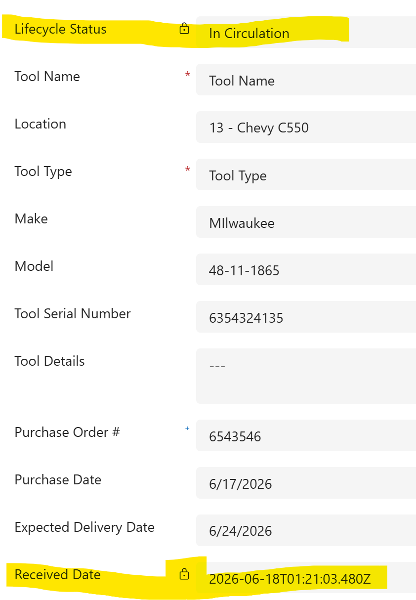
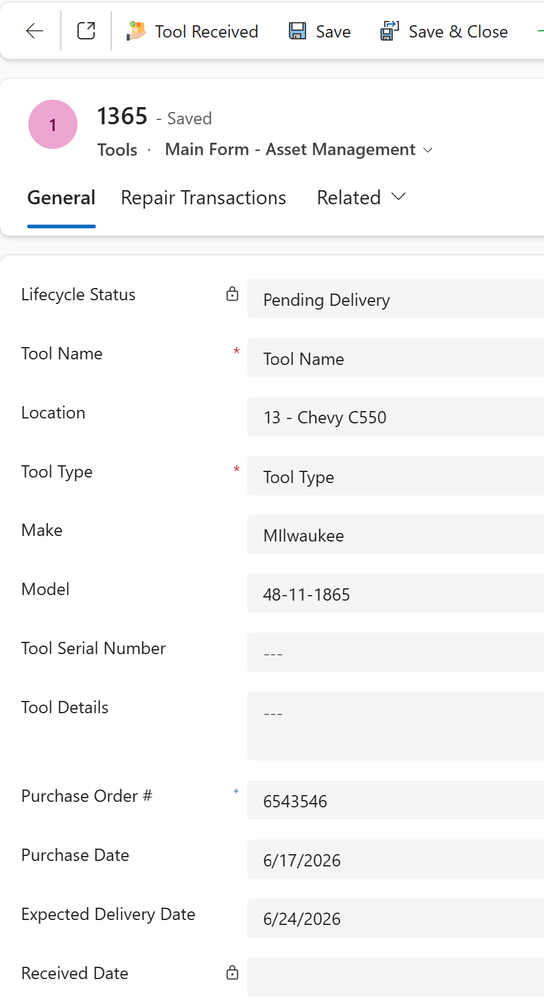
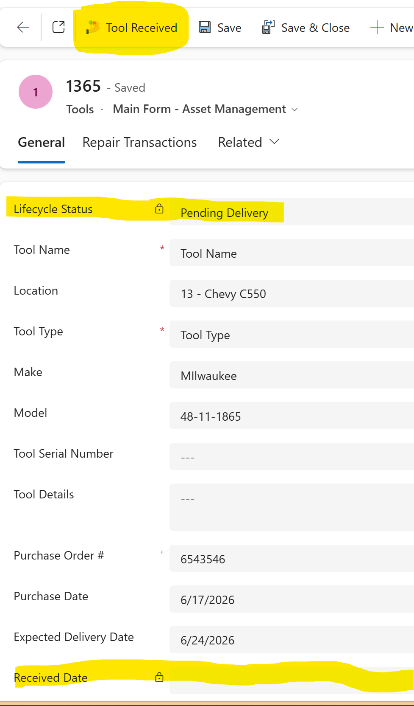
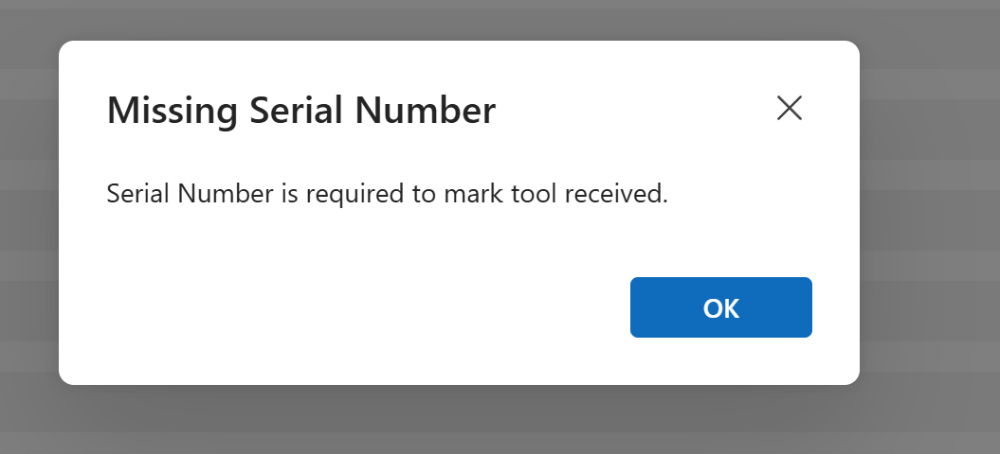
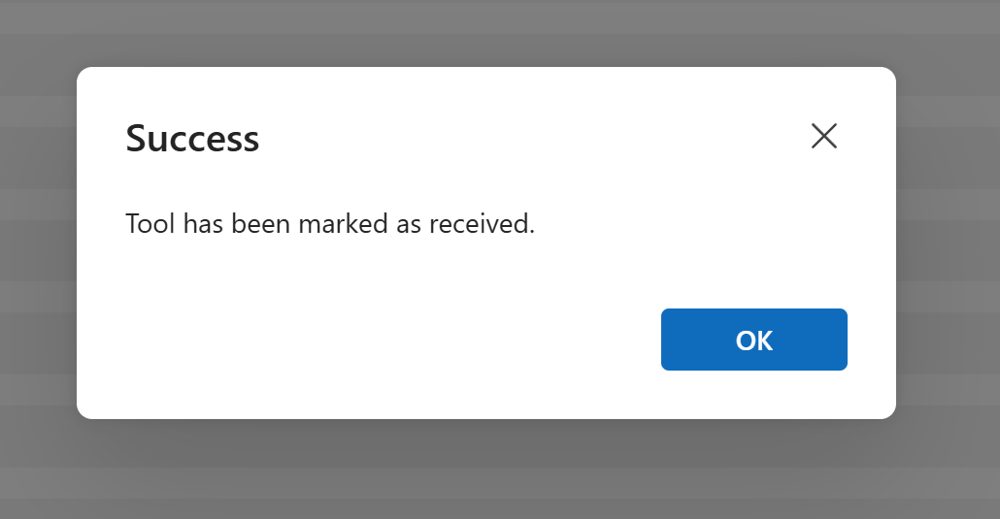

Project Summary
This model-driven app customization adds custom command bar buttons to the Asset Management app. The first button allows an authorized user to place an order from a New Tool Request record, create a new Tool record in Dataverse, copy request information into the Tool record, update the request status, and navigate directly to the new Tool. A second button supports the receiving process after the tool has been delivered.
Custom Button in the Command Bar
The Order Placed button appears in the command bar of the New Tool Requests form. It gives users a simple one-click action while the JavaScript web resource handles security, validation, record creation, status updates, and navigation.

Web Resource Configuration
The command bar button uses a JavaScript web resource. The button passes the current form context as the PrimaryControl parameter so the script can read values from the current request record, save the form, validate fields, and perform Dataverse operations through the Xrm Web API.

Security Check
Before the button can create a Tool record, the script checks whether the current user belongs to an authorized Entra security group backed by a Dataverse Group Team. If the user is not authorized, the script stops and displays a Not Authorized message.
const ALLOWED_AAD_GROUP_OBJECT_ID = "399ea51a-9ff5-43c6-9981-b10dbeaf383d";
const userId = Xrm.Utility
.getGlobalContext()
.userSettings
.userId
.replace(/[{}]/g, "");
const teamLookup = await Xrm.WebApi.retrieveMultipleRecords(
"team",
`?$select=teamid,name,azureactivedirectoryobjectid&$filter=azureactivedirectoryobjectid eq ${ALLOWED_AAD_GROUP_OBJECT_ID}`
);
const teamMembership = await Xrm.WebApi.retrieveMultipleRecords(
"teammembership",
`?$filter=systemuserid eq ${userId}&$select=teamid`
);
Required Field Validation
The script verifies that all required request fields are completed before allowing the tool to be created. If information is missing, the user receives a clear alert listing the fields that must be completed first.
var requiredFields = [
{ name: "wi_requestedtooltype", label: "Requested Tool Type" },
{ name: "wi_requestedtoolname", label: "Requested Tool Name" },
{ name: "wi_make", label: "Make" },
{ name: "wi_model", label: "Model" },
{ name: "wi_po", label: "PO Number" },
{ name: "wi_expecteddeliverydate", label: "Expected Delivery Date" },
{ name: "wi_vendor", label: "Vendor" }
];

Source Request Information
The New Tool Request form stores the purchasing information that will be used to create the Tool record. The command button uses this information as the source data for the new Tool, including values such as purchase order number, vendor, expected delivery date, tool name, and tool type.

Tool Record Creation
After validation, the script saves the request, retrieves the saved values, builds a Tool record payload, and creates a new Tool record in Dataverse. The new Tool is linked back to the original New Tool Request record so the relationship is preserved.
var toolPayload = {
wi_make: request.wi_make,
wi_model: request.wi_model,
wi_location: request.wi_location,
wi_purchaseorder: request.wi_po,
wi_expecteddeliverydate: request.wi_expecteddeliverydate,
wi_purchasedat: request.wi_vendor,
wi_tooltype: request.wi_requestedtooltype,
wi_toolname: request.wi_requestedtoolname,
wi_purchasedate: new Date().toLocaleDateString("en-US"),
wi_lifecyclestatus: 127700004,
"wi_NewToolRequest@odata.bind": "/wi_newtoolrequestses(" + requestId + ")"
};
var createdTool = await Xrm.WebApi.createRecord("wi_tools", toolPayload);

Request Status Updates and Navigation
Once the Tool record is created, the script updates the original request so it cannot be used to create another tool. It marks the request as tool created, updates the request status to Ordered, flags the Tool as created from the button, and then opens the new Tool record form for the user.
await Xrm.WebApi.updateRecord("wi_newtoolrequests", requestId, {
wi_toolcreated: true
});
await Xrm.WebApi.updateRecord("wi_newtoolrequests", requestId, {
wi_requeststatus: 127700001
});
await Xrm.WebApi.updateRecord("wi_tools", createdTool.id, {
wi_triggeredfromtoolrequestbutton: true
});
Xrm.Navigation.openForm({
entityName: "wi_tools",
entityId: createdTool.id.replace(/[{}]/g, ""),
formId: "46ad3441-aa61-f011-bec1-000d3a55f159"
});
Tool Pending Delivery
After the Tool record is created, the lifecycle status is set to Pending Delivery. This gives the team a clear status showing that the tool has been ordered but has not yet been received.

Tool Received Button Validation
The Tool Received button supports the receiving process. Before the tool can be marked as received, the process validates that a serial number has been entered. If the serial number is missing, the user receives a clear message explaining what needs to be completed.

Received Date and Lifecycle Update
When the receiving process is completed successfully, the tool is updated with a received date and the lifecycle status is changed from Pending Delivery to In Circulation. This helps keep asset records accurate and ensures the tool is ready to be used in the rental or circulation process.

Success Confirmation
After the update is completed, the user receives a confirmation message letting them know the tool has been marked as received.

Now, the lifecycle of the tool and date received have been updated by the web resource.
Business Impact
This customization reduces duplicate entry and helps keep the asset request and receiving process controlled. It ensures only authorized users can place orders, required request data is completed before tool creation, new Tool records are created consistently, and delivered tools are not moved into circulation without a serial number.
Skills Demonstrated
Model-driven app command bar customization, JavaScript web resources, Xrm Web API, Entra security group validation, Dataverse Group Team membership checks, form context handling, required field validation, record creation, record updates, lookup binding, duplicate prevention, lifecycle status management, receiving validation, and guided form navigation.